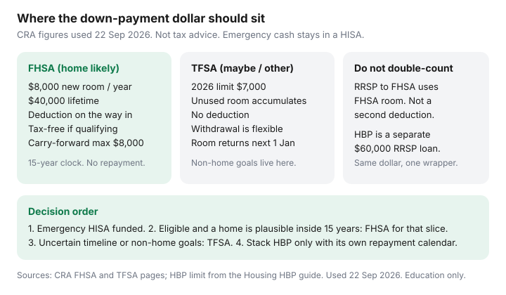

Personal Finance · Canada
FHSA vs TFSA for a First Home in Canada: Contribution Mechanics That Favour Cash Efficiency
A first-home household parks the down-payment dollars in a TFSA because it feels flexible, then discovers the FHSA room never started. Or it dumps every spare dollar into an FHSA and has nothing left when the furnace dies. Cash efficiency is which wrapper gets the next dollar, not which logo has a bonus. CRA participation room in the year you open a first FHSA is $8,000. The lifetime contribution ceiling is $40,000. The 2026 TFSA dollar limit is $7,000, and unused TFSA room piles up. Those are different calendars. Date-stamped 22 Sep 2026.
This page is the choice between those calendars for a first home. Housing already covers qualifying withdrawals and the Home Buyers’ Plan. Personal Finance already covers FHSA payday automation and TFSA automation. Use those for forms and PADs. Use this page to stop putting the home dollar in the wrong account.
Disclosure: Brokerage and registered-account offers are an offer type. Saving Optimizer may later add partner links. We do not currently claim issuer partnerships. This is education, not tax, legal, mortgage, or investment advice. Confirm room in CRA My Account. We do not pick investments inside either account.
Key takeaways
- FHSA room starts the year you open. Annual increment $8,000, lifetime $40,000, carry-forward capped at $8,000 (typical max in one year $16,000).
- Cash contributions are generally deductible. A qualifying withdrawal can be tax-free and is not repaid. A non-qualifying withdrawal is taxable.
- TFSA 2026 dollar limit $7,000. No deduction. Withdrawals are flexible and the room returns on 1 January of the next year. Unused room accumulates for life.
- If a qualifying home is plausible inside the 15-year participation period, the down-payment slice usually belongs in the FHSA. Emergency cash and non-home goals stay in a HISA and a TFSA.
- You can stack a qualifying FHSA withdrawal with an HBP withdrawal of up to $60,000 and a TFSA withdrawal. Do not send the same dollar through two wrappers, and do not treat an RRSP-to-FHSA transfer as a second deduction.
FHSA contribution room, carry-forward, and annual limits
CRA’s FHSA rules, used 22 Sep 2026 and consistent with the automation guide on this site: in the year you open your first FHSA, participation room is $8,000 and carry-forward is $0. You do not collect room for the years you were eligible before the account existed. After that, unused participation room carries into the next year only, and the carry-forward itself is capped at $8,000. Skip two years and the third year does not become $24,000.
The lifetime FHSA limit is $40,000 of contributions and transfers in. Five full $8,000 years fill it if you start immediately and never skip. An excess FHSA amount is charged 1% per month while it remains. Direct transfers from your RRSP (Form RC720) use participation room. They are not a second tax deduction — you already had the RRSP deduction, or you are moving undeducted RRSP money without creating a new one.
| Rail | FHSA | TFSA (2026) |
|---|---|---|
| New room this year | $8,000 after you have opened | $7,000 dollar limit, plus unused room from earlier years |
| Lifetime contributions | $40,000 | No lifetime cap. Room keeps accumulating. |
| Unused room | Next year only, max $8,000 of carry-forward | Carries forward indefinitely |
| Tax on the way in | Cash contribution generally deductible. You may delay the deduction. | No deduction. The dollar is after tax. |
| Tax on the way out | Qualifying withdrawal can be tax-free. Other withdrawals are income. | Withdrawal is not taxed. Room returns the next 1 January. |
| Clock | Generally 15 years, the year you turn 71, or the year after the first qualifying withdrawal — whichever is first | No participation deadline |
Neither limit is a reason to skip an emergency fund. Park that cash on the 12-month HISA test first. An FHSA is a poor emergency account because a non-qualifying withdrawal is taxable, and a TFSA emergency fund only works if you will not need the room back before next January.
Tax deduction versus TFSA flexibility
The FHSA’s cash-efficiency edge, when you will make a qualifying withdrawal, is the deduction on the way in and no tax on the way out. A TFSA only has the second half. A labelled illustration, not your return: $8,000 contributed to an FHSA at a 29% marginal rate reduces tax by about $2,320 if you claim the deduction this year. The same $8,000 in a TFSA reduces tax by $0. If both accounts later fund a qualifying home, the FHSA dollar did more work. If you are in a low-income year, delaying the FHSA deduction can be worth more than claiming it immediately. That is a bracket question for certified software or a preparer, not a number this page will assign to you.
Flexibility is the TFSA’s edge. You can take the money for a car, a parental-leave gap, or a home that falls through, and you do not add the withdrawal to income. The room comes back on 1 January. An FHSA non-qualifying withdrawal does the opposite: it is included in income, and you do not get that lifetime room back. The off-ramp if you never buy is a direct transfer to your RRSP or RRIF with Form RC721, which does not use RRSP room when you have no excess FHSA amount. That keeps the tax deferral. It does not recreate a tax-free exit. Cash you withdraw yourself and then contribute to an RRSP is the expensive version of the same idea.

Participation period and qualifying withdrawal rules
Opening starts a clock. CRA generally requires the FHSA to be closed by 31 December of the 15th year after you open it, by the end of the year you turn 71, or by 31 December of the year after your first qualifying withdrawal — whichever comes first. Put the open date on a calendar titled “FHSA latest close.” This is not a forever TFSA.
A qualifying withdrawal is tax-free only if you meet the conditions at withdrawal time, not merely at opening. At a high level, CRA’s test includes being a resident, a first-time buyer test (you did not live in a qualifying home you or your spouse or common-law partner owned in the year of withdrawal or the previous four calendar years), a written agreement to buy or build a qualifying home in Canada, and an intention to occupy it as a principal residence. The Housing how-to carries the form (RC725) and the occupancy timing. This page will not restate a closing checklist. If you are unsure you are a first-time buyer, read CRA before you open. A wrong open still starts the 15 years.
Two eligible spouses can each open an FHSA. That is two lifetimes of $40,000, not one shared pot. A household that fills one TFSA and ignores the second person’s FHSA has left the deduction on the table.
When TFSA-first still wins
TFSA-first is the cash-efficient choice in four ordinary cases.
- The home is a rumour. If you would not be surprised to still be renting in year 16, do not start a 15-year account for a dream. The RC721 path is a real off-ramp, and it lands you in RRSP rules, including tax on a later withdrawal.
- The dollar has another job. Parental leave, a car you will actually buy, or support for a parent is not a qualifying home. Those dollars belong in a TFSA or a HISA, where a withdrawal is not income.
- You already own, or your spouse’s ownership fails the first-time test. Opening anyway does not create a loophole. The Housing page and CRA’s four-year lookback are the test.
- High-interest revolving debt is unpaid. The rate-gap order still applies. A deduction does not beat a card in the high teens. Capture an employer match before extra investing of any kind, then attack that card, then fill FHSA room for a real home plan.
A fifth case is mechanical: you opened an FHSA, contributed $0, and this year’s room is $16,000, but you only have $6,000 of cash that is truly for the home. Contribute the $6,000. Do not borrow to “use the room,” and do not raid the emergency HISA to make the number pretty. Unused room up to $8,000 can carry one year. It cannot carry two.
Stacking FHSA, HBP, and TFSA without double-counting
CRA allows a qualifying FHSA withdrawal and a Home Buyers’ Plan withdrawal for the same qualifying home when you meet each program’s rules at the time of each withdrawal. They are different wrappers. The HBP limit on the Housing guide is $60,000 per eligible person from that person’s own RRSP (verified there on 20 Sep 2026). A 2026 first HBP withdrawal has a first repayment year of 2031 under the temporary relief described on that page. FHSA qualifying withdrawals are not repaid. Treating the stack as “$40,000 plus $60,000 of free money” skips the repayment and skips the fact that the RRSP dollar and the FHSA dollar cannot be the same dollar.
Three moves that double-count:
- Transfer $8,000 from an RRSP to an FHSA and also claim an $8,000 cash deduction. The transfer uses room and is not deductible again.
- Withdraw TFSA cash, contribute it to an FHSA, and also pretend the TFSA room is still available this year. The room returns next 1 January, not this afternoon.
- Designate an RRSP contribution as both an HBP repayment and a new deduction. The Housing HBP page is explicit: a repayment is not a second deduction.
A clean stack for an eligible couple with a home inside the window: each person’s FHSA filled up to that year’s participation room with new cash, each person’s HBP only if the repayment calendar is funded, and TFSA withdrawals for costs that are not a good fit for either registered plan (closing cash you might need back, moving, the emergency refill). New RRSP contributions generally need 90 days in the plan before an HBP withdrawal. Last-minute dumps are how the stack breaks. This page does not shop mortgage rates and does not suggest what to hold inside the accounts.
A decision tree for first-home savers
Run the next dollar through this order. Stop at the first yes that spends it.
- Is the emergency HISA still short of the bill float you already chose on the parking guide? Fund that. Neither registered plan is the float.
- Is there an employer RRSP match you have not captured? Take the match. See employer match. An FHSA does not replace it.
- Is revolving debt at a high rate still unpaid? Pay that before extra FHSA or TFSA contributions.
- Are you eligible to open or contribute to an FHSA, and is a qualifying home plausible before the participation period ends? Put the down-payment slice in the FHSA, up to this year’s room, and automate it.
- Is the dollar for anything else, or is the home uncertain? TFSA, up to available room. If the TFSA is full, a non-registered HISA is fine. Do not force an FHSA.
- At purchase time, read the Housing FHSA and HBP pages before you withdraw. Stack only the programs whose forms you can sign honestly.
If you and a spouse both pass step 4, run the tree twice. One joint chequing account feeding one FHSA is how the second lifetime limit stays empty.
Sources & date stamps
- CRA, First Home Savings Account — participation room, lifetime limit, carry-forward, qualifying withdrawals, transfers (used 22 Sep 2026; dollar rails unchanged from the 21 Sep 2026 automation guide on this site).
- CRA, TFSA dollar limit for 2026 — $7,000, as used on the TFSA automation guide.
- Saving Optimizer Housing — FHSA how-to and Home Buyers’ Plan ($60,000; 2026 first withdrawal, first repayment year 2031).
- Over-contribution: 1% per month on an excess FHSA amount. Confirm your participation-room statement in My Account before a large December contribution.
Frequently asked questions
Does FHSA room start before I open the account?
No. CRA participation room starts the year you open your first FHSA, at $8,000. You do not collect room for earlier years when you were eligible but had no account.
What is the most I can put into an FHSA in one year?
Generally $8,000 of new room plus at most $8,000 of carry-forward from the prior year, so $16,000 if the account already existed and last year was unused. The lifetime contribution limit is $40,000. Confirm the participation-room statement in My Account.
If I am not sure we will buy, should the down payment sit in a TFSA?
Often yes. A TFSA withdrawal is not taxed, and the room returns the next 1 January. An FHSA withdrawal that is not a qualifying withdrawal is income. The direct-transfer off-ramp to an RRSP (Form RC721) keeps deferral; it does not recreate a tax-free exit.
Can we use an FHSA, the Home Buyers’ Plan, and a TFSA on the same purchase?
Yes at a high level if you meet each program’s rules. The HBP limit used on our Housing guide is $60,000 per eligible person and must be repaid. FHSA qualifying withdrawals are not repaid. Do not move the same dollar through two wrappers, and do not claim a deduction on an RRSP-to-FHSA transfer.
Is a 29% illustration my tax refund?
No. An $8,000 contribution at a labelled 29% marginal rate is about $2,320 of tax reduced only as arithmetic. Your bracket, province, and whether you delay the deduction change the result. This page is not a filing position.